04/02/2020 — Một người đàn ông sáu mươi mấy tuổi bị đau ngực, thở nhanh và tăng huyết áp
Bản dịch tiếng Việt của bài "A man in his sixties with chest pain, tachypnea, and hypertension" – Dr. Smith’s ECG Blog. Giữ nguyên toàn bộ 13 hình ảnh và 2 video của bản gốc.
Tác giả: Pendell Meyers
Một người đàn ông sáu mươi mấy tuổi đến khám vì đau ngực cấp và khó thở trong 1-2 giờ qua. Dấu hiệu sinh tồn đáng chú ý gồm tăng huyết áp 180/104 mm Hg và thở nhanh 24 lần/phút.
Đây là điện tâm đồ đầu tiên của bệnh nhân tại khoa cấp cứu (ED):

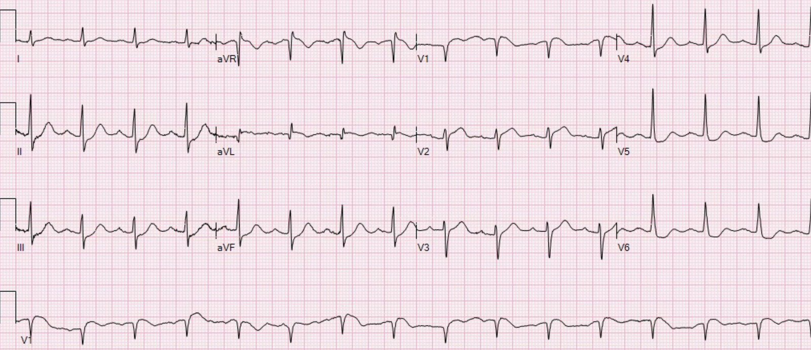
Tôi nhắn tin bản ghi này cho Dr. Smith mà không kèm bất kỳ thông tin nào, và ông trả lời: “Tắc LAD rõ ràng, ít nhất là với anh và tôi.”
Điện tâm đồ này kín đáo nhưng có giá trị chẩn đoán nhồi máu cơ tim do tắc (OMI) LAD. Có ST chênh lên (STE) ở V1-V2 và aVL. Sóng T tối cấp ở V2. Có ST chênh xuống (STD) soi gương ở V4-V6 và các chuyển đạo II, III, aVF. Điện tâm đồ không đạt tiêu chuẩn STEMI vì V2 không có mức STE 2.0 mm bắt buộc đối với nam giới trên 40 tuổi.
Xem các ca liên quan sau để có thêm ví dụ về hình ảnh này:
A 40 year old man with chest pain since last night (Nam giới 40 tuổi đau ngực từ tối qua)
A man in his sixties with chest pain at midnight with undetectable troponin (Nam giới sáu mươi mấy tuổi đau ngực lúc nửa đêm với troponin không phát hiện được)
How long would you like to wait for your Occlusion MI to show a STEMI? Sometimes serial ECGs minimizes the delay. (Bạn muốn chờ bao lâu để nhồi máu cơ tim do tắc của mình biểu hiện thành STEMI? Đôi khi các điện tâm đồ liên tiếp giúp giảm thiểu sự chậm trễ.)
What will you do for this patient transferred to you who is now asymptomatic? (Bạn sẽ làm gì với bệnh nhân được chuyển đến mà hiện đã hết triệu chứng này?)
Crushing Chest pain, but the ECG is not obvious; later there is both RBBB and LBBB (Đau ngực dữ dội như bị đè nghiến, nhưng điện tâm đồ không rõ ràng; về sau xuất hiện cả RBBB lẫn LBBB)
35 yo woman with LAD occlusion manifesting with only hyperacute Ts and inferior ST depression, also missed by computer (Phụ nữ 35 tuổi tắc LAD chỉ biểu hiện bằng sóng T tối cấp và ST chênh xuống ở thành dưới, cũng bị máy tính bỏ sót)
Các đồng nghiệp của tôi là Alex Bracey và Scott Weingart đã nhận ra điện tâm đồ này ngay lập tức.
Họ kích hoạt “báo động tim” (“Heart Alert”) (đây là cách chúng tôi gọi khi tin rằng bệnh nhân có nguy cơ rất cao bị nhồi máu cơ tim do tắc nhưng không đạt tiêu chuẩn STEMI – nó giúp gọi ngay bác sĩ nội trú chuyên khoa tim mạch (fellow) đến với chúng tôi, và bác sĩ can thiệp sẽ gọi điện cho chúng tôi để bàn về ca bệnh và quyết định có tiến hành kích hoạt toàn bộ phòng thông tim (cath lab) hay không.)
Bác sĩ hội chẩn đến và quyết định hủy báo động tim vì điện tâm đồ không đạt tiêu chuẩn STEMI. Họ cho rằng điện tâm đồ thay vào đó cho thấy “thiếu máu cục bộ do tăng nhu cầu” (demand ischemia). Ban đầu họ từ chối đưa bệnh nhân đi thông tim. Lúc đó chưa có kết quả troponin.
Nhóm điều trị đã chứng minh có rối loạn vận động thành trước trên siêu âm tại giường nhưng điều này không làm thay đổi quyết định của họ. Dưới đây là một số hình ảnh:
Hình đầu tiên gần với mặt cắt trục dọc cạnh ức, và hình thứ hai gần với mặt cắt từ mỏm. Cả hai đều chưa tối ưu, nhưng dường như cho thấy rối loạn vận động thành (WMA) ở vách trước, thành trước và mỏm.
Vì vậy nhóm tiếp tục điều trị nội khoa và ghi lại điện tâm đồ mỗi 10 phút. Dưới đây là ba điện tâm đồ tiếp theo:

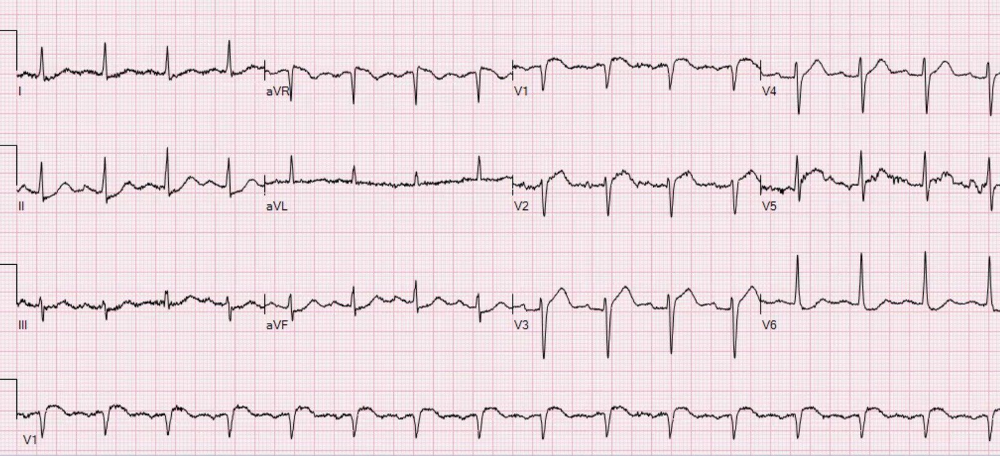

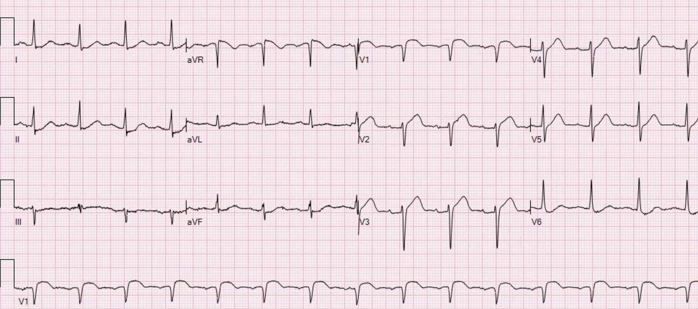

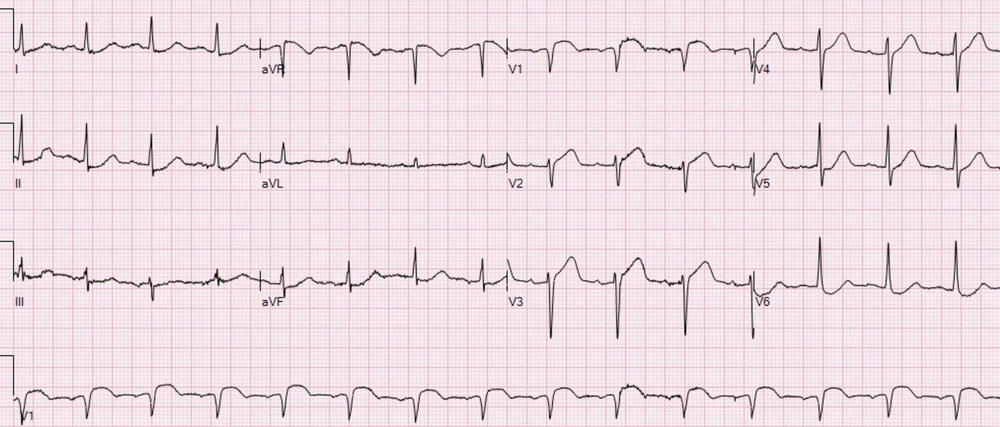
Các điện tâm đồ ghi lại này cho thấy STE và sóng T tối cấp đang tiến triển ở cùng các chuyển đạo. Tình trạng tắc vẫn đang tiếp diễn. Thế nhưng về mặt kỹ thuật, điện tâm đồ vẫn không đạt tiêu chuẩn STEMI do STE ở V2 chưa đủ (không đến 2.0 mm).
Nhóm biết rằng các điện tâm đồ này chỉ là bằng chứng thêm cho điều họ đã thấy. Troponin T trả về 0.11 ng/mL. Họ kích hoạt lại báo động tim và lần này đã thuyết phục được bác sĩ can thiệp đưa bệnh nhân vào phòng thông tim, với khoảng 40 phút chậm trễ do lần hủy ban đầu gây ra.
Họ phát hiện một tổn thương hẹp 99% với dòng chảy TIMI 1 ở LAD đoạn gần, được đặt stent và sau đó đạt dòng chảy TIMI 3.

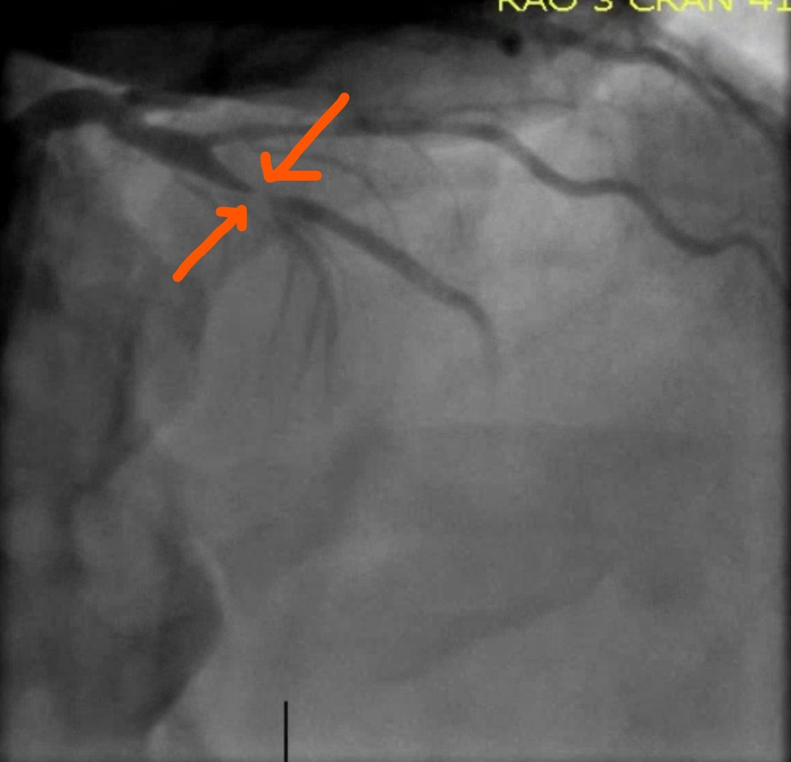

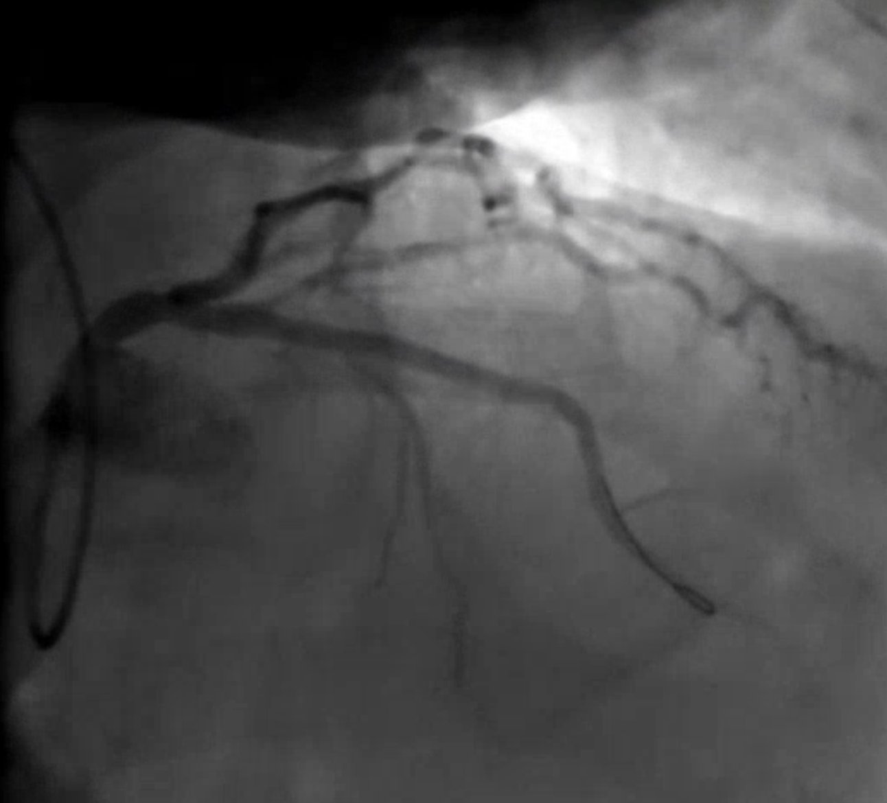
Đây là điện tâm đồ của bệnh nhân vào sáng hôm sau:

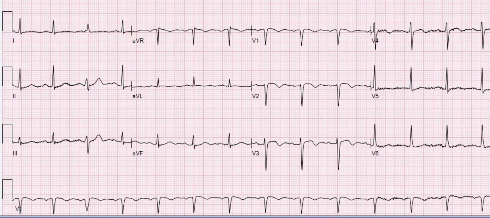
Troponin T đỉnh là 7.50 ng/mL (một ổ nhồi máu khá lớn, lớn hơn phần lớn các OMI STEMI dương tính (STEMI(+) OMI) trong dữ liệu của tôi tại cùng cơ sở này):

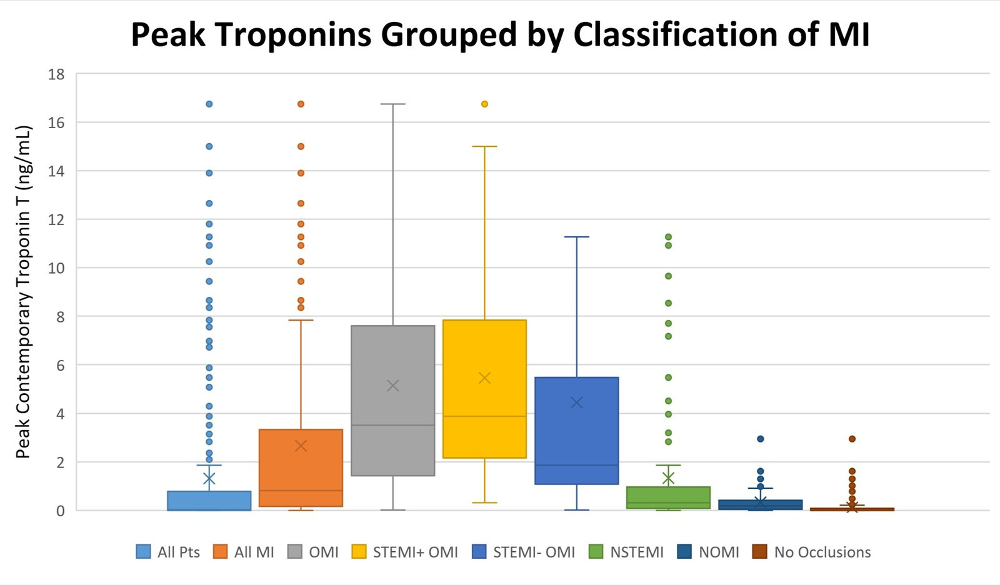
Phân suất tống máu (EF) khoảng 35% hai ngày sau đó, với rối loạn vận động thành trước và mỏm.
Bệnh nhân diễn biến tốt trong thời gian nằm viện và được xuất viện vài ngày sau đó.
Những điểm cần học:
Hãy nhớ hình ảnh này của nhồi máu cơ tim do tắc LAD với STE và sóng T tối cấp ở V1-V2 kèm các dấu hiệu soi gương ở chuyển đạo bên và chuyển đạo dưới. Xem các đường link ở trên với những ca tương tự.
Ngoài các dấu hiệu trên điện tâm đồ, bệnh nhân này có bằng chứng thiếu máu cục bộ đang diễn ra (dấu hiệu thiếu máu cục bộ trên điện tâm đồ, đau ngực kiểu thiếu máu cục bộ và troponin tăng dần) dù đã điều trị nội khoa, do đó cần kích hoạt phòng thông tim cấp cứu ngay cả khi không có chuyên gia đọc điện tâm đồ.
Trong khi mô hình STEMI vẫn còn được áp dụng, chúng ta phải bảo vệ những bệnh nhân như thế này khỏi nó bằng mọi kỹ năng mà chúng ta có: đọc điện tâm đồ ở mức chuyên gia, siêu âm tại giường, và hiểu biết về các lý do khác để thông tim cấp cứu theo các hướng dẫn.

===================================
BÌNH LUẬN CỦA TÔI, bởi KEN GRAUER, MD (4/2/2020):
===================================
Ca bệnh quan trọng được Dr. Meyers trình bày rất xuất sắc. Tôi phải thừa nhận rằng trong những ca như ca này, tôi cứ liên tục tự hỏi, “Mình đang bỏ sót điều gì?” Ý tôi là tôi thực sự không hiểu vì sao phải mất 4 bản ghi liên tiếp + một báo động tim (Heart Alert) lần thứ 2 mới có được sự đồng ý của bác sĩ can thiệp để đưa bệnh nhân này vào phòng thông tim.
- Tôi tập trung sự chú ý vào 2 điện tâm đồ đầu tiên đã được ghi (Hình 1) — vì nếu bác sĩ can thiệp còn do dự sau điện tâm đồ thứ 1 — thì tôi KHÔNG nghĩ ra được lý do nào khiến ở một người đàn ông 60 mấy tuổi bị đau ngực mới khởi phát lại còn có bất kỳ sự do dự nào sau điện tâm đồ thứ 2 về chẩn đoán OMI cấp và nhu cầu can thiệp kịp thời.

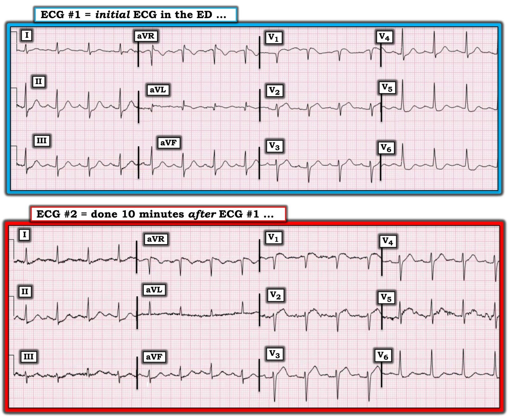
SUY NGHĨ CỦA TÔI: Tôi thấy 4 sai lầm cơ bản mà bác sĩ can thiệp đã mắc phải:
- Sơ suất #1: Như Dr. Meyers đã nêu — nhóm tim mạch đã không nhận ra tình trạng tắc LAD cấp lẽ ra phải hiển nhiên (với bệnh sử như vậy) trên điện tâm đồ #1.
- Sơ suất #2: Nhóm tim mạch đã không thay đổi quyết định ngay cả sau khi siêu âm tim tại giường cho thấy rối loạn vận động thành trước (điều mà, với các dấu hiệu trên điện tâm đồ #1, lẽ ra phải có giá trị chẩn đoán OMI thành trước cấp).
- Sơ suất #3: Nhóm tim mạch đã không so sánh từng chuyển đạo giữa điện tâm đồ #1 và điện tâm đồ #2 trong bối cảnh biểu hiện lâm sàng (tức là đau ngực mới xuất hiện ở một người đàn ông 60 mấy tuổi có rối loạn vận động thành trước trên siêu âm tim tại giường).
- Sơ suất #4: Dù tôi có thể hiểu được (mặc dù tôi không đồng ý) việc nhóm tim mạch quyết định không thông tim cho bệnh nhân dựa trên điện tâm đồ #1 — họ đã không đánh giá đúng tác động cộng dồn của thông tin lâm sàng liên tục cập nhật từ nhiều hơn một nguồn duy nhất. Bất kể các tiêu chuẩn “milimét” chặt chẽ có (hay không) được đáp ứng — 2 + 2 = 4. Trong bối cảnh của điện tâm đồ #1 — có tiến triển rõ ràng (Xem bên dưới) trên điện tâm đồ #2 — xảy ra đồng thời với rối loạn vận động thành tương ứng trên siêu âm tim tại giường.
Trước khi phân tích kỹ 2 bản ghi đầu tiên — tôi muốn nhấn mạnh giá trị lâm sàng của việc dùng chuyển đạo aVL như một manh mối vô giá để xác định vị trí của động mạch vành bị tắc cấp. Tôi tin rằng Hình 2 dưới đây đã tự nói lên tất cả.

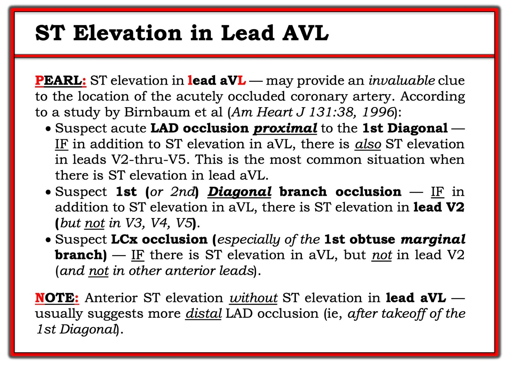
Xem Kỹ Hơn Điện tâm đồ #1 và Điện tâm đồ #2: Hãy quay lại 2 bản ghi đầu tiên trong ca này. Tôi đã thêm một vài nhãn vào Hình 1 để làm rõ những điểm tôi muốn nhấn mạnh (Hình 3):

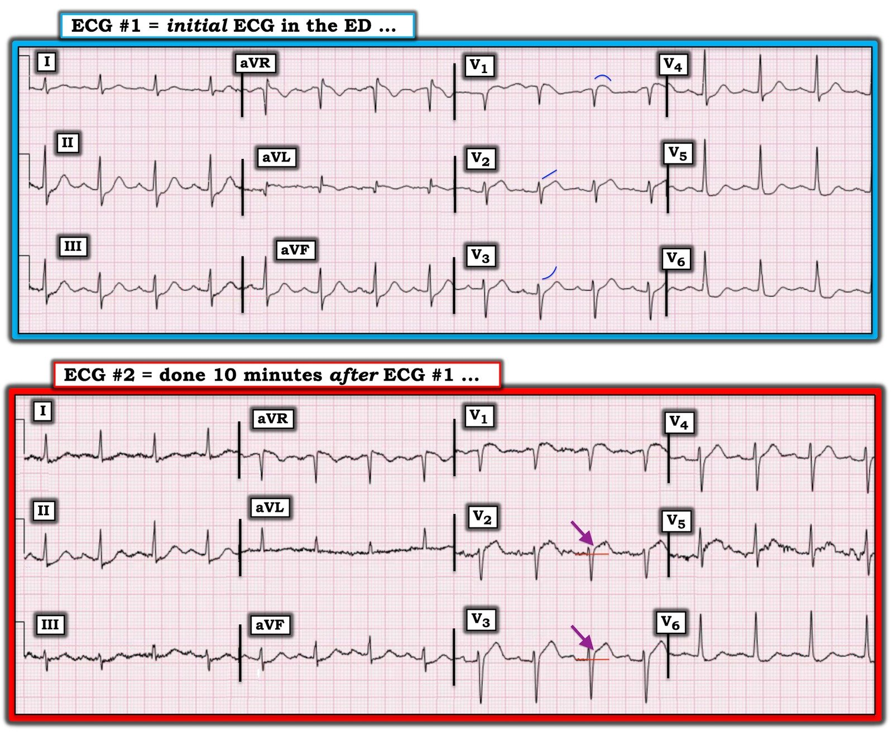
Như Dr. Meyers đã nêu — Điện tâm đồ #1 cho thấy ST chênh lên ở các chuyển đạo V1, V2 và aVL. Có ST chênh xuống soi gương ở các chuyển đạo dưới (tức là các chuyển đạo II, III, aVF) — và ở các chuyển đạo ngực bên (V4, V5, V6).
- Với tôi — hình ảnh của chuyển đạo aVL trên điện tâm đồ #1 không hề kín đáo. Có một sóng Q lớn (khá sâu và rộng, xét đến việc sóng R ở aVL nhỏ như thế nào). Ngoài ra — có cả ST chênh lên dạng vòm (có biên độ ít nhất bằng 1/3 biên độ sóng R ở aVL) kèm sóng T đảo ngược rõ ràng. Cùng với ST chênh xuống đáng lo ngại ở từng chuyển đạo dưới (tức là ST chênh xuống soi gương) — chỉ riêng những dấu hiệu này đã phải được coi là có giá trị chẩn đoán OMI cấp cho đến khi chứng minh được điều ngược lại ở bệnh nhân đau ngực mới xuất hiện này.
- HÌNH DẠNG của ST chênh lên ở các chuyển đạo V1 và V2 là đáng lo ngại. ST dạng vòm (tức là cấu hình “mặt mếu”) ở chuyển đạo V1 (đường cong màu XANH LAM ở chuyển đạo này) chắc chắn là không bình thường đối với một chuyển đạo V1. Ở chuyển đạo V2 — có đoạn ST thẳng đuỗn rõ ràng (đường xiên màu XANH LAM ở chuyển đạo này) + khoảng 1.5 mm ST chênh lên tại điểm J + sóng T tối cấp mà Dr. Meyers đã đề cập.
- Cần lưu ý rằng ở chuyển đạo V3 của điện tâm đồ #1 — không những không có ST chênh lên — mà hình dạng của đoạn ST ở chuyển đạo này còn thoai thoải dốc lên (theo đường cong hướng lên màu XANH LAM ở chuyển đạo này). Chuyển đạo V3 trông không bất thường trên điện tâm đồ #1.
- Lý do tôi đưa Hình 2 ở trên về ST chênh lên ở chuyển đạo aVL — là vì dù tôi tin chắc (cũng như Dr. Meyers & Dr. Smith) rằng điện tâm đồ #1 thể hiện OMI cấp — tôi nghĩ có thể “động mạch thủ phạm” là nhánh chéo thứ 1 hoặc thứ 2 của LAD — vì có ST chênh lên ở các chuyển đạo aVL, V1 và V2 — nhưng không có ở bất kỳ chuyển đạo trước nào khác. Theo kinh nghiệm của tôi — đôi khi khó phân biệt từ sớm giữa tắc LAD đoạn gần cấp với tắc cấp nhánh thứ 1 hoặc thứ 2 của nhánh chéo. Điển hình, khi tắc nhánh chéo cấp — ST chênh lên chỉ giới hạn ở các chuyển đạo aVL và V2 (và không thấy ở chuyển đạo V1 — Xem CA NÀY) — nhưng tôi chỉ là chưa chắc chắn về động mạch “thủ phạm” vào lúc tôi xem điện tâm đồ #1. ĐIỀU CỐT LÕI — điều quan trọng là điện tâm đồ #1 phải được coi là biểu hiện của OMI cấp cho đến khi chứng minh được điều ngược lại! (Các bản ghi sau đó đã làm rõ rằng ST chênh lên thực sự cũng có ở chuyển đạo V3 — nên rõ ràng gợi ý tắc LAD đoạn gần cấp!).
- Như vậy có BAO NHIÊU CHUYỂN ĐẠO có Sóng ST-T Bất thường trên điện tâm đồ #1? TRẢ LỜI: Ngoại trừ chuyển đạo I và V3 — chúng ta vừa mô tả bất thường sóng ST-T chắc chắn ở ít nhất 9 trong 12 chuyển đạo của điện tâm đồ #1 (10 nếu tính cả ST chênh lên rõ rệt ở chuyển đạo aVR, vốn là thay đổi soi gương với 6 chuyển đạo có ST chênh xuống trên bản ghi này).
Xem Kỹ Hơn Điện tâm đồ #2: Việc so sánh từng chuyển đạo giữa Điện tâm đồ #2 và điện tâm đồ #1 là thiết yếu để nhận ra các khác biệt MẤU CHỐT:
- Trục mặt phẳng trán dịch chuyển rất ít (không đáng kể). Vùng chuyển tiếp xuất hiện muộn hơn một chút trên điện tâm đồ #2 (tức là, sóng R trở nên cao hơn độ sâu của sóng S ở khoảng V4-đến-V5, so với giữa V3-đến-V4 trên điện tâm đồ #1). Điều thực sự quan trọng — là hình thái QRS ở các chuyển đạo V1, V2 và V3 khá giống nhau ở 2 bản ghi (dù có chênh lệch nhỏ về điện thế). Do đó — so sánh từng chuyển đạo là hợp lệ ở 2 bản ghi này!
- Tôi không biết vì sao sóng Q, ST chênh lên và sóng T đảo ngược mà chúng ta thấy ở chuyển đạo aVL trên điện tâm đồ #1 lại không xuất hiện ở bất kỳ bản ghi nào trong 3 bản ghi liên tiếp được thực hiện mỗi 10 phút sau điện tâm đồ thứ 1 này.
- Dù vậy — vẫn có thay đổi điện tâm đồ liên tiếp trên điện tâm đồ #2 so với điện tâm đồ #1. Giờ đây tôi đo được ≥2 mm ST chênh lên ở cả chuyển đạo V2 và chuyển đạo V3 trên Điện tâm đồ #2 (mũi tên TÍM chỉ vị trí tôi đặt điểm J — với đường ngang ĐỎ biểu thị đường nền ở các chuyển đạo này). Hãy chú ý đoạn khởi đầu của đoạn ST ở chuyển đạo V3 trên điện tâm đồ #2 giờ đã thẳng — trong khi trước đó nó dốc lên (đường cong màu XANH LAM) ở chuyển đạo V3 của điện tâm đồ #1. Như vậy, giờ đây có ST chênh lên nhiều hơn ở chuyển đạo V2 so với trên điện tâm đồ #1 — và, có ST chênh lên tối cấp mới ở chuyển đạo V3. Tôi thấy khó có thể nói rằng đây không phải là chỉ định thông tim cấp ở bệnh nhân này với đau ngực mới và rối loạn vận động thành trước mới trên siêu âm tim tại giường.
Chúng tôi xin CẢM ƠN Dr. Meyers đã trình bày ca bệnh này!